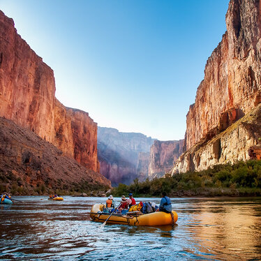
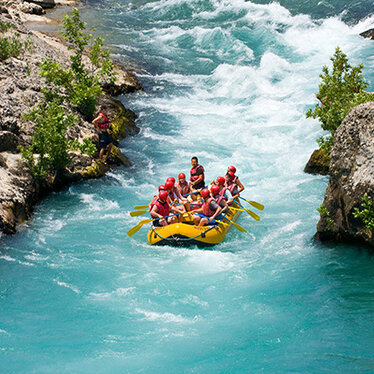

Rates and Dates
Make Memories with Dry Oar
Prices and Dates for our 2023 Season


This page will give information about what trips are available, when trips are available, and how much they cost.
GRAND CANYON THREE-NIGHT TRIP: 2023 Pricing and Dates Grand Canyon 3 night trips: $1,475
April 30 May 13, 20, 27, 30 June 3, 10, 17, 24, 28 July 1, 8, 15, 22, 29 August 5, 12, 19, 26 September 9, 17
GRAND CANYON SIX-NIGHT TRIP: (The dates listed will be the date that you spend the night in Marble Canyon. The launch date is the following day.) 2023 Pricing and Dates Grand Canyon 6 night trips: $2,550 April 25 May 8, 15, 22, 25, 29 June 5, 12, 19, 23, 26 July 3, 10, 17, 24, 31 August 7, 14, 21 September 4, 12
Salmon River 5 night trip (The dates listed will be the date that you spend the night in Salmon. The launch date is the following day.) 2016 Pricing and Dates Regular Rate: $1,540 Trip Dates June 3, 10, 17, 24 July 2
Desolation 6 night Trip 2016 Pricing and Dates Regular Rate: $1,790 Trip Dates July 10, 18, 26 Aug 3, 11, 19, 27 Sept 4